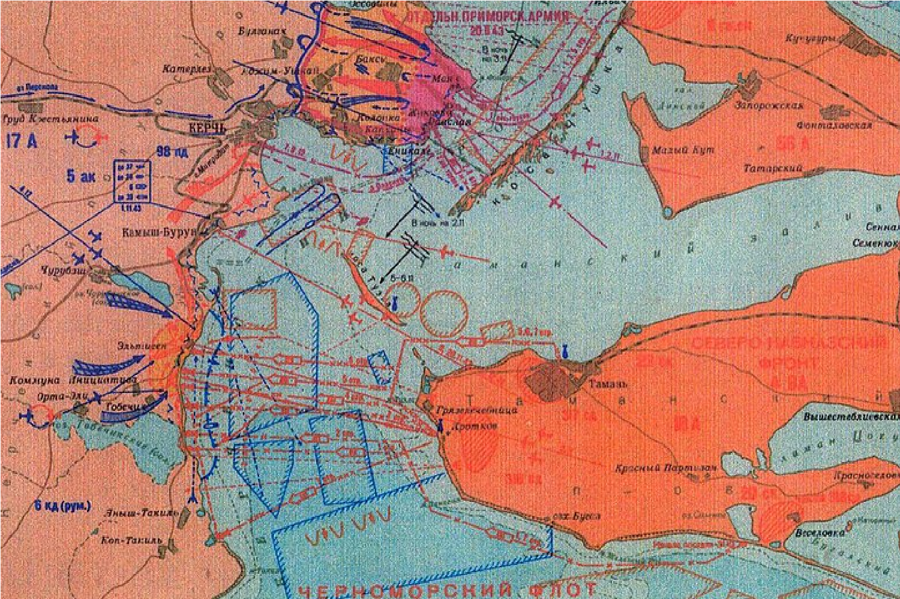
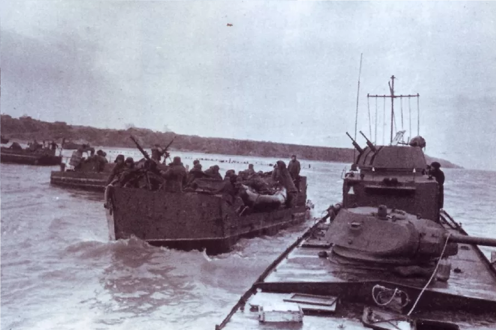
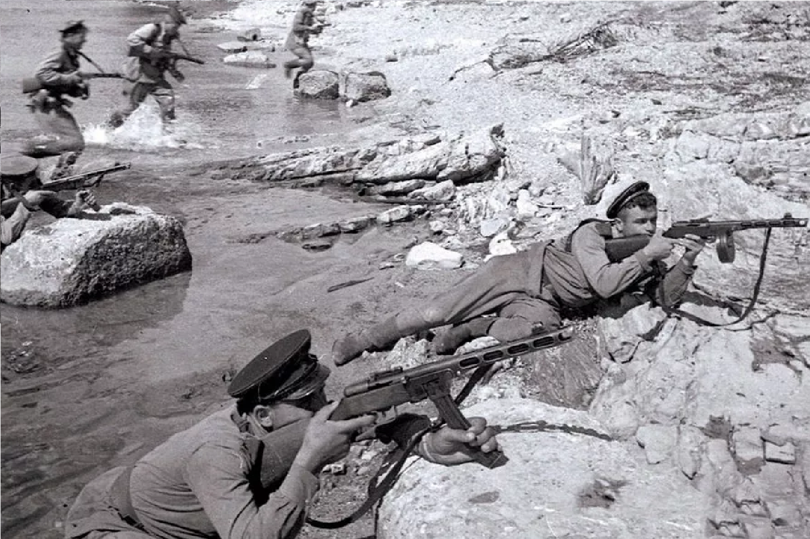

1942
|  |
|
|
Операция была тщательно подготовлена. Советское командование сосредоточило силы на Черноморском флоте и организовало десантные части, которые должны были произвести высадку на берегах Керченского пролива. Высадка десанта началась 26 декабря 1941 года. С боями советские войска смогли занять основные позиции. Им удалось захватить ключевые точки, такие как города Керчь и Феодосия. Несмотря на успехи в начале операции, немецкие войска организовали контрнаступление. Они быстро перебросили подкрепления и начали контратаки, что осложнило положение советских десантников. |
 |
|  |
В результате интенсивных боев и значительных потерь, советские войска оказались вынуждены отступить. Операция завершилась в январе 1942 года неудачей для Советского Союза. Тем не менее, она продемонстрировала важность десантных операций в ходе войны. Керченская десантная операция позволила советскому командованию в дальнейшем улучшить тактику и стратегию проведения подобных операций. |